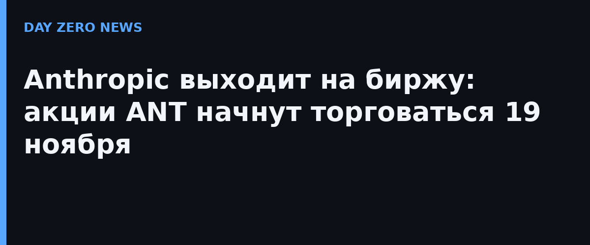

Anthropic официально объявила о запуске роуд-шоу для первичного публичного размещения акций. Компания предложит 825 000 000 акций класса A — из них 801 351 354 принадлежат самой Anthropic, ещё 23 648 646 продадут текущие акционеры (выручку от них компания не получит). Подписчикам также зарезервировано право в течение 30 дней выкупить дополнительно до 123 750 000 акций. Стартовый диапазон цены — от 70 до 78 долларов за акцию, листинг — на Nasdaq Global Select Market под тикером «ANT».
Как подтвердила сама компания на своей IPO-странице с часто задаваемыми вопросами (а следом и биржа Nasdaq), торги должны начаться в четверг 19 ноября, если регулятор успевает дать добро. Окончательную цену размещения предполагается зафиксировать днём раньше, 18 ноября, — она будет зависеть от рыночной конъюнктуры и спроса. По расчётам немецкого издания heise online, при верхней границе диапазона Anthropic рассчитывает привлечь до 64 млрд долларов брутто — выручка от IPO может стать одной из крупнейших в истории технологических размещений.
В европейском проспекте для частных инвесторов из ЕС и Швейцарии указана цена 120 долларов — и это не «европейская наценка». Anthropic объясняет: цифра завышена специально, чтобы покрыть случай, когда итоговая цена окажется выше изначально планируемой; фактически европейские инвесторы заплатят ту же цену, что и американские.
Для ИИ-индустрии это редкий случай, когда лаборатория frontier-моделей становится публичной компанией с открытой отчётностью. В собственных биржевых материалах Anthropic раскрыла и риски: миллиардные обязательства по вычислительным мощностям и огромные затраты на обучение моделей. Теперь за этими цифрами сможет следить любой биржевой инвестор: ИИ-сектор, ещё не оправившийся от отставки главы Nvidia всего днём ранее, получает вторую громкую биржевую историю подряд.